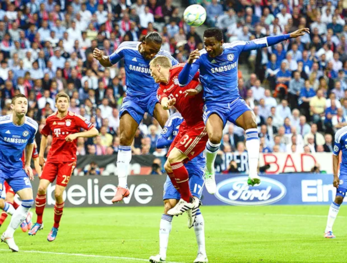
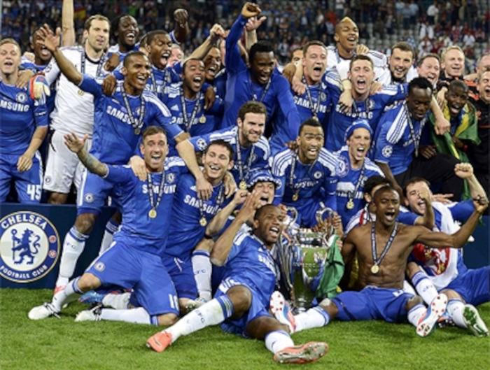

Villas-Boas, Di Matteo e Benítez (2011–2013)
Após a demissão de Ancelotti, diversos nomes foram especulados como novo treinador do clube, principalmente do ex-treinador do próprio Chelsea, o neerlandês Guus Hiddink. Porém, como Hiddink não obteve liberação frente à Federação Turca de Futebol, o clube foi atrás de André Villas-Boas, então treinador do Porto e ex-assistente de José Mourinho durante seu período no Chelsea. Para sua liberação, o clube pagou treze milhões e trezentos mil libras ao clube português e assinou um contrato de três temporadas. Posteriormente, como assistente de Villas-Boas seria contratado Roberto Di Matteo, ídolo do clube como jogador durante os anos 1990. Já reforços para o elenco, destaca-se a maior promessa recente do futebol europeu, o belga Romelu Lukaku. Também foram contratados os espanhóis Oriol Romeu (este para substituir o lesionado Essien) e Juan Manuel Mata, e o português Raul Meireles, vindo no último dia da janela de transferências do rival Liverpool. Ainda foram contratadas as promessas Thibaut Courtois e Ulises Dávila, mas que foram emprestados para Atlético de Madrid e Vitesse, respectivamente. O clube ainda tinha acertada a contratação do brasileiro Lucas Piazon para o início de 2012, vindo das categorias de base do São Paulo. No entanto, durante o período que Villas-Boas ficou à frente do Chelsea, acumulou apenas resultados péssimos e medianos, não tendo conseguido implantar seu estilo de trabalho. Por conta disso, foi anunciada sua demissão em 4 de março de 2012, assumindo Di Matteo como seu substituto até o término da temporada.
Di Matteo iniciou sua nova trajetória no Chelsea com duas vitórias, a primeira sobre o Birmingham City por 2 a 0, pela Copa da Inglaterra, classificando o clube para as quartas-de-finais; já a segunda aconteceu na Premier League, sobre o Stoke City, por 1 a 0. No entanto, seu primeiro grande desafio aconteceu dez dias após assumir o clube, quando precisou reverter uma derrota por 3 a 1 para o Napoli, feito conseguido com uma vitória por 4 a 1 na prorrogação. Quatro dias depois, o clube enfrentou o Leicester City pelas quartas-de-final da Copa da Inglaterra, se classificando após vitória por 5 a 2. Nas quartas-de-finais da Liga dos Campeões, os Blues enfrentaram o Benfica, eliminando o clube com vitórias por 1 a 0 em Portugal e 2 a 1 no Stamford Bridge. Retornando à Copa da Inglaterra, mais uma vitória, desta vez contra o Tottenham Hotspur, por 5 a 1, classificando o clube a sua décima primeira final do torneio. Nas semifinais da Liga, o Chelsea acabou pegando o Barcelona, então atual campeão do torneio. Apesar de considerada como uma classificação improvável pela imprensa, o Chelsea conseguiu chegar a sua segunda final após vitória por 1 a 0 em casa e empate em 2 a 2 no Camp Nou.
Em pouco mais de um mês no comando do clube, Di Matteo já havia levado o clube à duas finais, no entanto, não conseguiu ter o mesmo desempenho na Premier League. Em onze partidas, obteve apenas cinco vitórias, três empates e três derrotas, terminando o campeonato apenas na sexta posição, tendo sofrido na penúltima rodada uma derrota por 4 a 1 para o Liverpool, três dias após vencer o mesmo na final da Copa da Inglaterra por 2 a 1, garantindo seu sétimo título. Na disputa de sua segunda final na temporada, a imprensa considerou como improvável o título, assim como havia considerado improvável a classificação azul para à final, muito devido aos quatro desfalques ingleses na final (Branislav Ivanović, Raul Meireles, Ramires e John Terry). Tendo jogado durante quase toda a partida no contra-ataque, sofreu um gol aos 83 minutos, conseguindo o empate cinco depois, com Drogba. Com o empate no tempo normal, a partida foi para a prorrogação, onde o time conseguiu segurar o placar por 1 a 1, tendo Čech ainda defendido um pênalti de Arjen Robben. Na disputa dos pênaltis, mesmo após ter começado perdendo a primeira cobrança, com Mata, o clube conseguiu o título após Čech defender as duas últimas cobranças bávaras, de Ivica Olić e Bastian Schweinsteiger. Ainda como um "brinde" pela conquista, o título do Chelsea na Liga tirou o rival Tottenham da próxima Liga dos Campeões, uma vez que o mesmo terminou na quarta posição (última posição classificatória para a Liga), e o Chelsea na sexta (fora, apenas classificado para a Liga Europa), herdando a vaga dos Spurs na próxima edição do torneio.